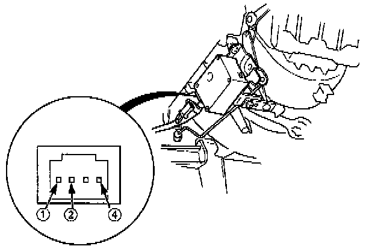
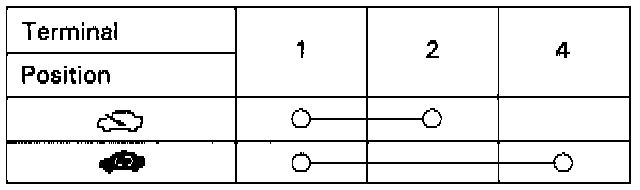

Component Test

1. Connect battery power to the No. 1 terminal of the recirculation control motor, and connect the No.2 terminal to ground.
The motor should run. If it doesn't, reverse the connections; the motor should then run.

2. Check for continuity between the terminals of the recirculation control motor according to the table.